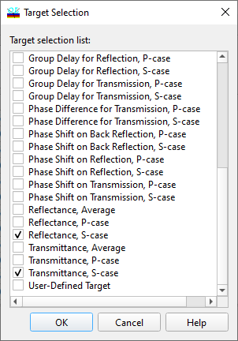

Target Selection
Target Selection
Navigation: OptiLayer Menu Commands > Data Menu > Target Editor >
Target Selection
` <idh_spectral_abbreviations.html>`__ ` <target_editor.html>`__ ` <floating_constant_targets.html>`__
Typically, you select spectral characteristics using their abbreviations. This dialog enables you to directly specify which spectral characteristics are included in the design targets.

To check the required characteristics, select them and then press OK to apply the changes. The Cancel button will discard all changes made.

Note: The angle of incidence is always specified in the Incident Medium. For back reflectance and similar characteristics, this means that the angle of back reflectance should be computed using Snell’s Law if the Exit Medium is different from the Incident one.